2021 Tournament Sponsors

Dropbox's Mission is to design a more enlightened way of working.

The Coop’s Mission is to serve the Harvard and MIT communities as a cooperative by providing quality products and services. Our operations should be profitable, enabling us to share a portion of those profits with our members in the form of a 10% member discount, and to support a capital budget which will ensure our viability.